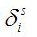

This index indicates is a particular residue is classified as superficial or internal according to a cutoff on the accessible surface area fixed by the user. The weighted version implemented in ProtDCal is as follow:

Where  takes value one if the area of the residue is larger than the fraction of the parametric total surface area of the residue and cero otherwise.